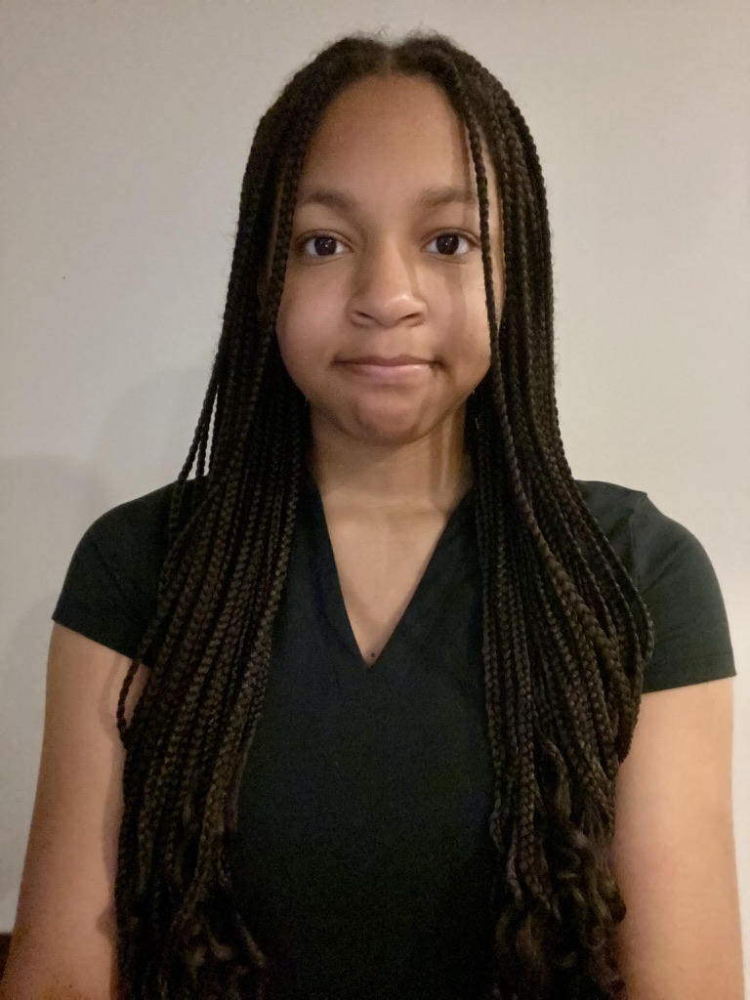

My Resume

Jessica Wren
Chicago, IL | jrwren@cps.edu | (312) 522-0051
Objective
I am a current high school student with a passion for biology and STEM. I hope to pursue an education and career in the sciences.
Work Experience
Research Intern, Shedd Aquarium
Summer 2026
- Collected behavioral data on Amazonian River Turtle with the used of ethograms.
- Presented data to the Animal Care team.
- Created artwork and an artist statement to reflect my on realationship with conservation.
Customer Service Intern, Field Museum
Summer 2025
- Assisted guest with information and directions.
- Sold and managed tickets
Education
Jones College Preparatory High School
Current Senior, expected graduation 2027
Skills
- Java Coding
- Flute Player
- Mandarin
- Volleyball
- Research
- Lab Skills